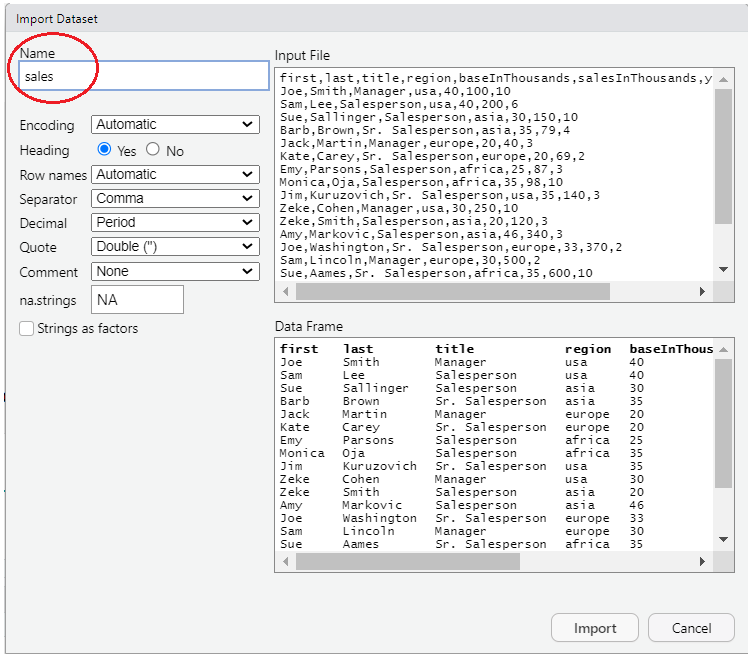

18.1 NOTE - this page is for “IDS2040 - Data Management” (not “IDS1020 - Intro to IDS”)
NOTE - If you are in my “IDS1020 - Intro to IDS” class, this is NOT the page you should be reading. Rather, jump to the next section entitled “Relational Databases and SQL” and start from there.
This page is intended for my “IDS460 - Data Management” class. The info below assumes that you have some knowledge of the dplyr package in R (which was covered in the previous section). After you get a basic idea of what the SQL SELECT statement does and how it is very similar to the dplyr functions, you can move onto the next section entitled “Relational Databases and SQL” and continue with that information.
18.2 Get the data
The data we are using in this section contains information about salespeople who are employees of a company. Each row of the data contains info about one salesperson. The salespeople get paid some “base pay” as well as a commission that is a percent of the total dollar amount of sales they make.
Follow the instructions below to get the data and start using it in R.
Error in contrib.url(repos, "source"): trying to use CRAN without setting a mirror
18.2.2 Download the file
The data is contained in a csv file. If you’d like to follow along with this tutorial on your own computer you can download the .csv file we are using by clicking here.
18.2.3 Import the data by clicking on some buttons …
The code in the next section below uses read_csv function to read the data into R. If you are not comfortable with R, I recommend that you instead, follow the instructions starting in the next bullet to import the data into R.
If you are not familiar with R, you may have some trouble running the read_csv() code shown below. Instead, I recommend that you follow the following instructions to import the file into R.
To do so, click on “Import Dataset” button on the “Environment” tab (usually found in the upper-right-hand window pane in RStudio).
Choose “From Text (base)” and locate your file. You should see something like this:

Make sure to change the “Name” portion (see circled section in picture) to read “sales”, then press the “import” button. This will open up a new tab in RStudio that shows the contents of the file. You can safely navigate away from this tab or close the tab and the data will remain imported and can be seen by typing “sales” (without the “quotes”).
18.2.4 Import the data by typing some R code …
The following code reads the data into R. Alternatively, you can follow the instructions above to click on some buttons to import the data.
# Read in the data into a tibble## Note that the following code uses the readr::read_csv function from the readr# package which is part of the tidyverse collection of packages. # This function is similar to the base-R read.csv function.# # read_csv returns a tibble, which is the data structure that the # tidyverse packages use in lieu of dataframes. A tibble is basically# a dataframe with extra features.# By contrast, the base-r read.csv function returns a dataframe.sales =read_csv("salespeople-v002.csv", na=c("","NULL"), show_col_types=FALSE)
18.3 Databases and SQL
A database is an organized collection of data that is designed to be accessed and manipulated by computer programs. We’ll cover a little more about exactly what a database is and how it differs from Excel, R and other programs in the next section of this book. Below is just a brief explanation to give you some background before we start getting into the details of the SQL language that is used to communicate with databases.
A “relational database” is a type of database in which data is arranged in “tables” that are organized into “rows” and “columns”. A “relational database table” is very similar to an R dataframe or tibble. Relational databases are controlled and managed with software known as “Relational DataBase Management System” (RDBMS) software. Relational database technology dates back to the 1970s and has been around long before R has been around. Relational databases are used by just about every major company all around the world.
“Structured Query Language” (or SQL for short - pronounced “sequel”) is the standard language that is used to communicate with a DBMS to manage and manipulate the data in a Relational Database. SQL has many different commands. One of the most important SQL commands for data analysts to know is the SQL “SELECT” command. It is this command that is used to extract data from a database and organize the data into a desired form. We will focus in this section on an intro to the SQL SELECT statement.
As we said above, R is NOT a Database Management System. However SQL is a very popular language. Many technologists come to R, already having a deep knowledge of the SQL language. Therefore it is nice to know that the SQL language can also be used to manipulate R dataframes. This is possible because R dataframes are very, very similar in structure to Relational Database “tables” (i.e. they have rows, columns, column names and specific datatypes for each column).
The R “sqldf” package includes a function named “sqldf” which takes a SQL command as its argument. Wherever the SQL command refers to the name of a relational database “table”, sqldf runs the SQL command using the R dataframe with that name.
18.4 dplyr is very similar to the SQL SELECT command
The designers of dplyr got inspiration for many of their ideas from SQL. Therefore once you know the basics of dplyr it should be very easy to transfer that knowledge to learning the SQL SELECT statement.
The following examples show how the concepts you learned in the previous section about dplyr carry over to the SQL SELECT statement.
The English word “query” means a question. A SQL SELECT statement is often referred to as a database “query”. In essence a SQL SELECT statement in essence asks the database a question and gets back an answer.
18.5 SQL SELECT “clauses” compared with dplyr “functions”
While dplyr uses different “functions”, the SQL SELECT statement is comprised of different “clauses”. The clauses in the SQL SELECT statement are listed below. We will elaborate on the details of these clauses in the sections below.
SELECT
This is used to “select” the columns you want - similar to dplyr select function.
FROM
Used to specify which “tables” contain the information you will be working with. In dplyr this is accomplished via the first argument, .data, of each of the dplyr “verb” functions that we learned about in the previous section.
WHERE
Choose the rows you want. Directly analogous to the dplyr “filter” function.
GROUP BY
Directly analogous to the dplyr “group_by” function.
HAVING
This is also similar to the dplyr “filter” function. We will learn later how this differs from the SQL SELECT WHERE clause.
ORDER BY
Directly analogous to the dplyr “arrange” function
LIMIT
Directly analogous to the dplyr print(n=…) function or the dplyr slice_head(n=…) function.
18.6 Order of the clauses is important
A SQL SELECT statement may contain some or all of the above clauses. Only the SELECT clause is absolutely required. If the SQL SELECT statement contains more than one clause then whichever clauses do appear must appear in the order listed above.
18.7 Is SQL case sensitive? yes and no
Different SQL products treat case sensitivity differently. In general the names of tables and columns ARE case sensitive. The “keywords” of the language are generally NOT case sensitive. However, it is often the convention of many SQL books and references to show SQL keywords in UPPER CASE. We have done that below but it is not strictly necessary.
18.8 Whitespace in SQL commands is ignored
A SQL command may be written entirely on one line. However, extra whitespace (i.e. spaces, tabs, newlines) may be added to make the code more readable. It is common to start each SQL SELECT statement clause on a new line and to add extra whitespace to make the code more readable. In general we tried to follow that practice in the code.
18.9 Intro to ERDs - i.e. “Entity Relationship Diagrams”
An “Entity Relationship Diagram” (ERD) is a diagram that highlights the structure of the tables in a database (in database terminology tables are also known as “entity sets” or “entity types” - see below). The ERD does NOT show the data in the tables, just the structure of the tables. The following is an ERD for the sales data we have been using.
Note that so far we’ve only been using one table. An ERD gets more complicated whena database contains several tables. We will revisit ERDs again later.
erDiagram
SALES {
first character "employee first name"
last character "employee last name"
title character "employee title"
region character "region that employee sells to"
baseInThousands numeric "employee's base pay (in thousands)"
salesInThousands numeric "total sales dollars (in thousands)"
yearsWithCompany numeric "number years employee with company"
}
The table name is shown at the top
Under the table name
The 1st column contains the names of the table’s fields (i.e. columns)
The 2nd column contains the datatype of the fields
The 3rd column contains a description of the field
Some Entity Relationship Diagrams don’t contain as much information. Often an ERD will NOT contain a description of the fields. This is still a “valid” ERD, just not as descriptive.
erDiagram
SALES {
first character
last character
title character
region character
baseInThousands numeric
salesInThousands numeric
yearsWithCompany numeric
}
In the extreme case, an ERD may only contain the names of the tables. This type of ERD is only really useful when the database contains multiple tables.
There are different terms used to refer to the rows and columns of a table, dataframe or tibble. Statisticians often refer to each row of a table as an observation and each column of a table as a variable.
In the world of databases, a column can be referred to as a “column” or a “field”. Rows are referred to as just “rows” but sometimes are referred to as “records” or “entities”. Often an entire table is referred to as an “entity” (technically a table, which is a collection of rows, is an “entity set” or an “entity type”).
The truth is not many people use the word “entity” or “entity set”. However, an “Entity Relationship Diagram” is used to show the tables in a database and how the tables are “related” to each other.
In this section we are just focusing on a single table. In a later sections, we’ll learn more about “relationships” between multiple tables and how the relationships are displayed on an Entity Relationship Diagram.
18.11 SELECT and FROM clauses
# The SELECT clause specifies which columns you want.# The FROM clause specifies the table (or tables) that contain the data.sqldf("SELECT title, first, last FROM sales")
Error in sqldf("SELECT title, first, last\n FROM sales"): could not find function "sqldf"
# SELECT * in SQL is similar to select(everything()) in dplyr.# * is an abbreviation for all of the column names.sqldf("SELECT * FROM sales")
Error in sqldf("SELECT *\n FROM sales"): could not find function "sqldf"
# Unfortunately, the SQL SELECT * is not as smart as the everything() function in dplyr.# In dplyr, everything() does not include columns that you already typed.# In SQL, the * always includes ALL columns. Therefore the following# query displays the title and region columns a 2nd time due to the *sqldf("SELECT title, region, * FROM sales")
Error in sqldf("SELECT title, region, *\n FROM sales"): could not find function "sqldf"
# The only thing you can do in a select statement without a FROM clause# is to perform calculations without data from a table.sqldf("SELECT 3+2, 100*5")
Error in sqldf("SELECT 3+2, 100*5"): could not find function "sqldf"
18.12 add new columns in SELECT clause
# In dplyr, to add new columns you use the mutate function.# In the SQL SELECT command this is accomplished as part of the SELECT clause.# To add new columns that are calculated from other columns# simply add the calculations to the select clause.sqldf("SELECT first, last, salesInThousands, 0.1 * salesInThousands FROM sales ")
Error in sqldf("SELECT first, last, salesInThousands, 0.1 * salesInThousands\n FROM sales\n "): could not find function "sqldf"
# You can give the new column a unique name by following the definition# of the column with "AS columnName".sqldf("SELECT first, last, salesInThousands, 0.1 * salesInThousands as commission FROM sales ")
Error in sqldf("SELECT first, last, salesInThousands, 0.1 * salesInThousands as commission\n FROM sales\n "): could not find function "sqldf"
# The word "AS" is actually optional. The following adds two new columns# but does not use the word AS. All you need is the definition of the column# followed by a space followed by the name of the new column.sqldf("SELECT first, last, baseInThousands, salesInThousands, 0.1 * salesInThousands commission, salesInThousands * 0.1 + baseInThousands takeHome FROM sales WHERE region='africa' ")
Error in sqldf("SELECT first, last, baseInThousands, \n salesInThousands, 0.1 * salesInThousands commission, \n salesInThousands * 0.1 + baseInThousands takeHome\n FROM sales\n WHERE region='africa'\n "): could not find function "sqldf"
18.13 use aggregate functions in SELECT to create summary rows
# The dplyr summarize function is used to summarize (or aggregate) info from# several rows into a single row. # # In the SQL SELECT statement, this is accomplished by simply using# aggregate functions in the select clause.## SQL has several built in standard aggregate functions## count(*) - similar to n() in dplyr - we'll discuss why the * is there later# avg(SOME_COLUMN)# max(SOME_COLUMN)# min(SOME_COLUMN)sqldf("select count(*), avg(baseInThousands), max(baseInThousands) FROM sales ORDER BY region ASC, salesInThousands DESC")
Error in sqldf("select count(*), avg(baseInThousands), max(baseInThousands)\n FROM sales\n ORDER BY region ASC, salesInThousands DESC"): could not find function "sqldf"
# As shown above we can assign names to the new columns.# Again, the word "AS" is optional. The following statement# would work exactly the same way if we did not have the word "AS"sqldf("SELECT count(*) as numberOfEmployees, avg(baseInThousands) AS averagebaseInThousands, max(baseInThousands) AS maxbaseInThousands FROM sales ORDER BY region ASC, salesInThousands DESC")
Error in sqldf("SELECT count(*) as numberOfEmployees, \n avg(baseInThousands) AS averagebaseInThousands, \n max(baseInThousands) AS maxbaseInThousands\n FROM sales\n ORDER BY region ASC, salesInThousands DESC"): could not find function "sqldf"
# This is the same query as above.# This version does not have the word "AS".# The results are exactly the same.sqldf("SELECT count(*) as numberOfEmployees, avg(baseInThousands) averagebaseInThousands, max(baseInThousands) maxbaseInThousands FROM sales ORDER BY region ASC, salesInThousands DESC")
Error in sqldf("SELECT count(*) as numberOfEmployees, \n avg(baseInThousands) averagebaseInThousands, \n max(baseInThousands) maxbaseInThousands\n FROM sales\n ORDER BY region ASC, salesInThousands DESC"): could not find function "sqldf"
18.14 WHERE clause
# WHERE is directly analogous to the dplyr filter function.## The WHERE clause identifies the rows that will be returned.# It takes a logical expression that uses the names of the columns.# For every row the SELECT statement analyzes the row and calculates the# result of the logical expression for that row. If the logical expression# for a row is TRUE you get the row back. If not you do not get the row.sqldf("SELECT * FROM sales WHERE salesInThousands < 100")
Error in sqldf("SELECT *\n FROM sales\n WHERE salesInThousands < 100"): could not find function "sqldf"
# This query uses aggregate functions in the SELECT but does NOT have a WHERE.# Therefore the result is a summary of ALL rows in the table.sqldf("SELECT count(*), min(baseInThousands), max(baseInThousands), avg(baseInThousands) FROM sales")
Error in sqldf("SELECT count(*), min(baseInThousands), max(baseInThousands), avg(baseInThousands)\n FROM sales"): could not find function "sqldf"
# This is the same query but adds WHERE region='asia'.# As a result the summary row only reflects info about the rows for 'asia'.# Notice the there are fewer rows in the count(*) column and some of the# other summary statistics are also different.sqldf("SELECT count(*), min(baseInThousands), max(baseInThousands), avg(baseInThousands) FROM sales WHERE region='asia'")
Error in sqldf("SELECT count(*), min(baseInThousands), max(baseInThousands), avg(baseInThousands)\n FROM sales\n WHERE region='asia'"): could not find function "sqldf"
18.15 ORDER BY clause
# The ORDER BY clause is directly anaogous to dplyr's arrange functionsqldf("SELECT * FROM sales WHERE salesInThousands < 100 ORDER By salesInThousands")
Error in sqldf("SELECT *\n FROM sales\n WHERE salesInThousands < 100\n ORDER By salesInThousands"): could not find function "sqldf"
# Just as with dplyr's arrange function the rows can be ordered# from largest to smallest by specifying desc, i.e. a descending order# for the values of a column.sqldf("SELECT * FROM sales WHERE salesInThousands < 100 ORDER BY salesInThousands DESC")
Error in sqldf("SELECT *\n FROM sales\n WHERE salesInThousands < 100\n ORDER BY salesInThousands DESC"): could not find function "sqldf"
# Just as with dplyr's arrange function you can specify that the order# of the rows should depend on multiple columns. # # The first column specified is used to order all of the rows.# Subsequent columns mentioned in ORDER By are used only for rows# in which the values for the earlier columns are the same.## Each column could have an ascending (asc) or descending (desc) order.# If neither asc nor desc is specified, then the default is an ascending order.sqldf("SELECT * FROM sales ORDER BY region ASC, salesInThousands DESC")
Error in sqldf("SELECT *\n FROM sales\n ORDER BY region ASC, salesInThousands DESC"): could not find function "sqldf"
18.16 GROUP BY clause
# The GROUP BY clause in SQL is directly analogous to the group_by function in dplyr.## All of the rows that have the same value for the specified GROUP BY columns# are aggregated (i.e. summarized) in a single line of output.## GROUP BY should only be used if the SELECT clause includes aggregate functions. sqldf("SELECT title, count(*), avg(baseInThousands) avgBase, max(baseInThousands) maxBase FROM sales GROUP BY title ORDER BY title")
Error in sqldf("SELECT title, count(*), avg(baseInThousands) avgBase, max(baseInThousands) maxBase\n FROM sales\n GROUP BY title\n ORDER BY title"): could not find function "sqldf"
# Grouping by a different column - regionsqldf("SELECT region, count(*), avg(baseInThousands) avgBase, max(baseInThousands) maxBase FROM sales GROUP BY region ORDER BY region")
Error in sqldf("SELECT region, count(*), avg(baseInThousands) avgBase, max(baseInThousands) maxBase\n FROM sales\n GROUP BY region\n ORDER BY region"): could not find function "sqldf"
# Just as with dplyr, the groups can be defined by more than one column.## The following query treats all of the rows that match in both the# region and title columns as a single group.## For example, all of the original rows from the sales table# that have a title of "Salesperson" and a region of "asia" # are considered to be part of the same group and are summarized # in a single row of the output.sqldf("SELECT title, region, count(*), avg(baseInThousands) avgBase, max(baseInThousands) maxBase FROM sales GROUP BY title, region ORDER BY title, region")
Error in sqldf("SELECT title, region, count(*), avg(baseInThousands) avgBase, max(baseInThousands) maxBase\n FROM sales\n GROUP BY title, region\n ORDER BY title, region"): could not find function "sqldf"
# A similar query without a GROUP BY returns just a single row that# summarizes the data from all rows of the table.sqldf("SELECT count(*), avg(baseInThousands) avgBase, max(baseInThousands) maxBase FROM sales")
Error in sqldf("SELECT count(*), avg(baseInThousands) avgBase, max(baseInThousands) maxBase\n FROM sales"): could not find function "sqldf"
18.17 LIMIT clause
# The LIMIT clause is similar to print(n=) with dplyr.# It limits the number of rows returned to the first few# that would have been returned had the query not included the LIMIT clause.## The LIMIT clause is usually used with an ORDER BY clause.sqldf("SELECT * FROM sales ORDER BY salesInThousands desc LIMIT 10")
Error in sqldf("SELECT *\n FROM sales\n ORDER BY salesInThousands desc\n LIMIT 10"): could not find function "sqldf"
# Note that the LIMIT clause is not standard SQL - some SQL flavors# do not contain a LIMIT clause. However, the LIMIT clause or # something similar is part of many SQL flavors.